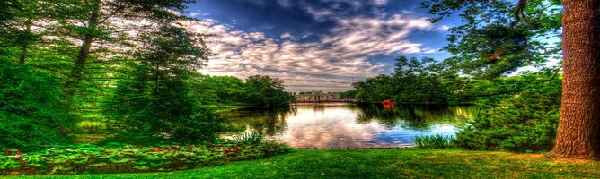

El señor Aside
The content of the aside element must be related to the surrounding content, but not completely necessary for its understanding.
In other words, it represents a section of a page that consists of content that is indirectly related to the main content of the document.
Not to be confused with the use of the word "aside" as an adverb, which means "to the side".
Título del articulo del dia
El dia que aprendi flexbox, 18/01/19
I offer naked, virgin, untouched and simple, For my delights and the pleasure of my friends, These Arab nights lived, dreamed and translated over their homeland and over the water They were sweet to me during my leisure in remote seas, under a sky now far away.
It was a small village bordering on Ribamoura, a nursery for smugglers, where this profession of risk and profit made people less asleep than the villagers usually are. There were plenty of hot-headed young men, and those who were unable to pick up a shotgun and go out for a profit were scorned.
-----------------------------------------------------------------------------------------------------------------------------
Otro post de hace semanas
Mas dias aprendiendo, 01/01/19
In the beginning there was only Chaos. Heaven and Earth formed a confused mass, in which everything and nothing intermingled like dirt in water. Everywhere there was a thick fog that no human eye could ever see, and which Pan-Ku managed to disperse with his marvellous strength. The pure was then separated from the impure, and the supreme goodness appeared, which spreads its blessings upon every creature. Their world is that of light. Whoever approaches him discovers the path that leads to the kingdom of goodness. But he who wishes to penetrate into the secret of the beginning of all that exists must read The Chronicle of Origins
In the beginning God created the heavens and the earth. The earth was chaos and confusion and darkness above the abyss, and a wind of God fluttered above the waters. God said, "Let there be light," and there was light. God saw that the light was good, and God took away the light from the darkness; and God called the light day, and the darkness he called night. And evening and dawn came: the first day.
-----------------------------------------------------------------------------------------------------------------------------